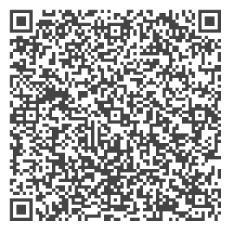

G1 · Grundlagen · Blatt 1 von 3
Demokratie und Regierungssysteme
Demokratie gleich Demokratie?

Darum geht es
Das fiktive Land: Repubblica Nova. Die Ausgangslage: Repubblica Nova ist ein neu gegründetes Land mit einer vielfältigen Bevölkerung und einer jungen Demokratie. Das Land steht vor mehreren Herausforderungen:
- Politische Stabilität: Repubblica Nova hat in der Vergangenheit unter politischer Instabilität gelitten. Es gab häufige Regierungswechsel und Konflikte zwischen verschiedenen politischen Lagern.
- Effizienz der Regierung: Die Bürger*innen von Repubblica Nova wünschen sich eine effiziente und handlungsfähige Regierung, die schnell und effektiv auf Herausforderungen reagieren kann.
- Kontrolle der Macht: Um Machtmissbrauch zu verhindern, ist es wichtig, dass es effektive Kontrollmechanismen gibt, die sicherstellen, dass keine einzelne Person oder Gruppe zu viel Macht ansammelt.
- Bürgerbeteiligung: Die Bürger*innen möchten aktiv in politische Entscheidungen eingebunden werden und erwarten Transparenz und Rechenschaftspflicht von ihren politischen Führern.
So arbeiten Sie mit diesem Blatt
- Links stehen alle Arbeitsaufträge. Sie sehen immer, wo Sie sind und was noch kommt.
- Jeder Auftrag ist ein Blatt. Sie scrollen von oben nach unten.
- Oben rechts sichern Sie Ihren Stand als Datei. So geht nichts verloren, auch wenn Sie das Gerät wechseln.
So läuft dieses Blatt
Lesen Sie sich den nachfolgenden Text durch und arbeiten Sie die gemeinsamen Merkmalen von Demokratien heraus.


Öffentliche Fassung: Die zwei Schulbuchseiten (Klett-Themenheft, S. 4–5) stehen aus Rechtegründen nicht im Netz. Sie bekommen den Text im Moodle-Kurs oder auf Papier.
Noch offen: Der Text liegt nur als Bild vor. Eine abgetippte Fassung für Vorleseprogramme fehlt.
Diskutiert in kleinen Gruppen, welche Regierungsform ihr für Repubblica Nova am geeignetsten haltet und warum. Berücksichtigt dabei die spezifischen Herausforderungen des Landes: politische Stabilität, Effizienz der Regierung, Kontrolle der Macht und Bürgerbeteiligung. Stellt eure Entscheidung der Klasse vor und begründet sie. Dies Tabelle soll ihnen helfen, die Unterschiede zwischen den Regierungsformen zu verstehen und eine fundierte Entscheidung zu treffen.
M 1.1 Repräsentative Demokratien im Vergleich
| Demokratieform | Präsidentielle Demokratie | Parlamentarische Demokratie | Mischform (Semi-präsidentielle Demokratie) |
|---|---|---|---|
| Merkmale: | Der Präsident wird direkt vom Volk gewählt und hat eine starke Exekutivmacht. Es gibt eine klare Trennung zwischen Exekutive und Legislative. | Der Regierungschef (Premierminister) wird vom Parlament gewählt und ist diesem verantwortlich. Das Staatsoberhaupt hat vorwiegend repräsentative Aufgaben. | Es gibt sowohl einen direkt gewählten Präsidenten als auch einen vom Parlament gewählten Premierminister. Die Exekutivmacht ist geteilt. |
| Beispiel | USA | Deutschland | Frankreich |
| Vorteile: | Bietet politische Stabilität und eine starke, handlungsfähige Regierung. Der Präsident kann schnell Entscheidungen treffen. | Enge Verbindung zwischen Exekutive und Legislative, was zu effizienter Regierungsarbeit führen kann. Die Regierung ist dem Parlament verantwortlich und kann durch ein Misstrauensvotum abgesetzt werden. | Bietet eine Balance zwischen präsidentiellen und parlamentarischen Elementen, was zu mehr Flexibilität führen kann. Beide Exekutivspitzen müssen zusammenarbeiten. |
| Nachteile | Risiko der Machtkonzentration beim Präsidenten und mögliche Konflikte zwischen Präsident und Parlament. | Kann zu politischer Instabilität durch häufige Regierungswechsel führen. Die Regierung ist stark von der Unterstützung der Parlamentsmehrheit abhängig. | Mögliche Konflikte zwischen Präsident und Premierminister können die Regierungsarbeit behindern. Die Machtverhältnisse sind komplizierter. |
Ihre Bewertung
| Herausforderung | Bewertung der verschiedene Demokratieformen |
|---|---|
| Politische Stabilität: | |
| Effizienz der Regierung: | |
| Kontrolle der Macht: | |
| Bürgerbeteiligung |
Wählen Sie die Demokratieform, welche ihrer Meinung nach am besten die Herausforderungen der Repubblica Nova lösen kann. Scannen Sie hierzu den QR-Code.

Noch offen: Ob die Umfrage hinter dem QR-Code noch läuft, hat nur Ihre Lehrkraft in der Hand.